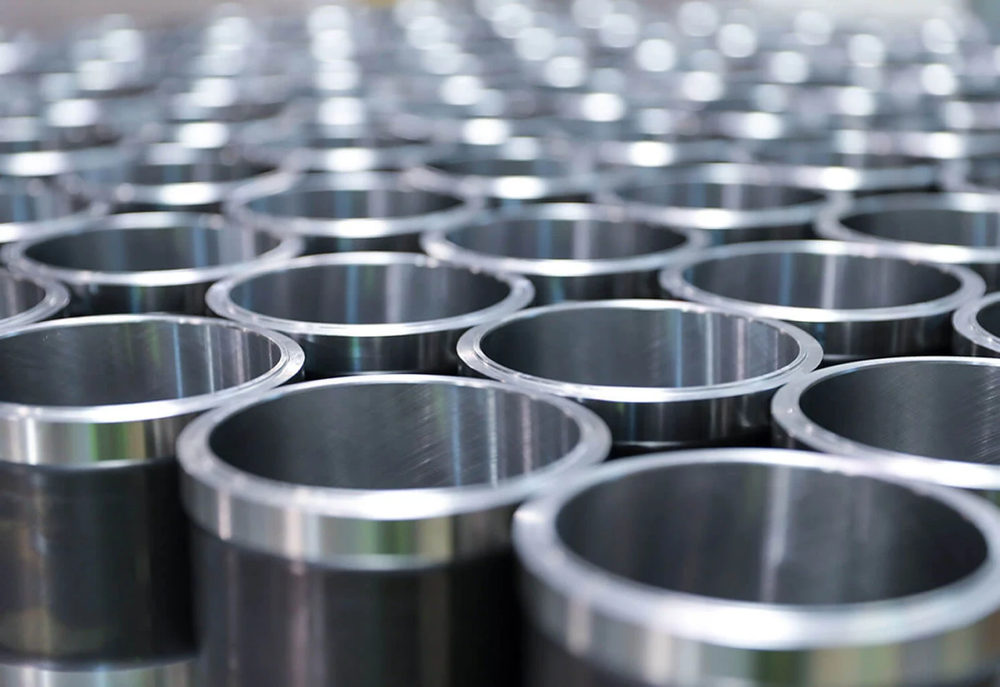
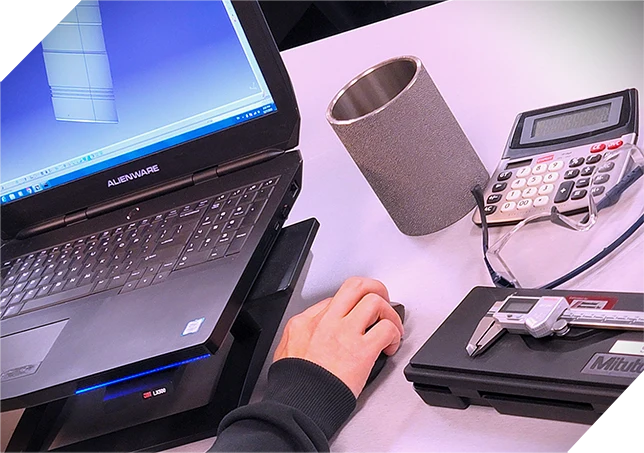
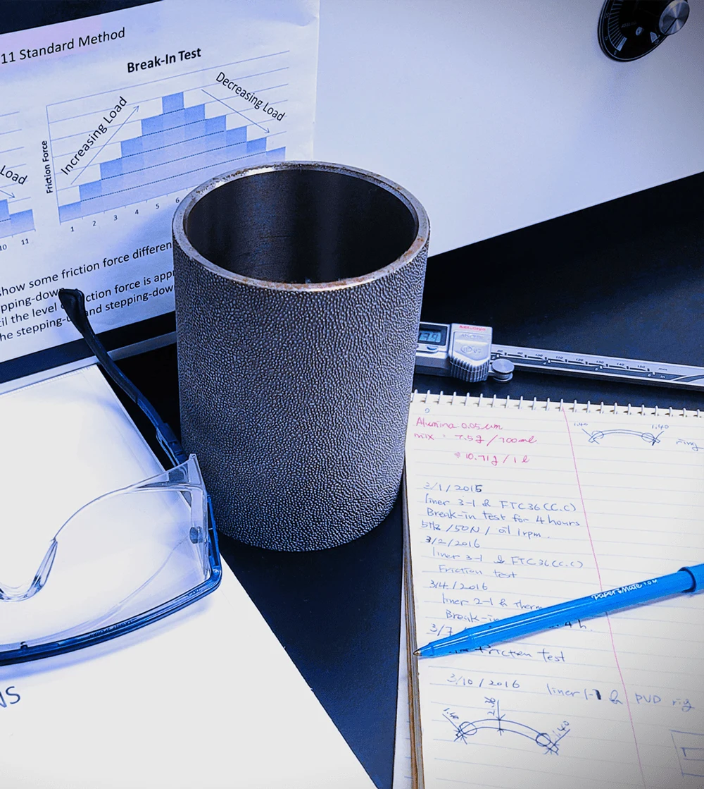

PRECISION MEETS POSSIBILITY让精密，连接无限可能。
从一只气缸套，到一个协同运转的制造系统。
以制造的深度，向智能的未来。
ZYNP / INNOVATION STUDIOEXPLORING THE NEXT
01 / OUR EXPERTISE
两大业务。
向同一个未来。
以精密部件建立可靠基础，
以系统集成连接更广阔的制造现场。
PRECISION COMPONENTS01

CYLINDER LINERS / 产品实拍精密动力，始于每一处细节。
材料、工艺与精密制造协同，服务乘用车、商用车、工程机械、农业机械与船舶工业。
气缸套材料与表面工程精密验证
探索气缸套产品 ↗23 件可辨识单品 · 独立产品图册 INTELLIGENT MANUFACTURING / 02
INTELLIGENT MANUFACTURING / 02让每个工位，融入完整系统。
从机器人集成到在线检测，再到生产管理与智能物流，连接设备、工序和信息。
机器人系统DNC / MES智能仓储
探索机器人解决方案 ↗CYLINDER LINERS / IN DETAIL精密之处，经得起细看。
从表面纹理到产品轮廓，近距离观察气缸套的真实细节。
浏览 23 件单品 ↗ZYNP 国际站产品实拍 · 图片展示产品外观，具体型号与参数请咨询工程团队。
02 / INDUSTRY CONNECTIONS
走进真实场景。
回应每一种需求。
理解工艺，才能组织合适的系统。
选择行业，了解我们的应用方向。
AUTOMOTIVE汽车零部件
围绕零部件制造场景，协同机器人集成、机床联网与在线检测，让单个工位融入完整的生产流程。
了解行业方案 ↗ A VISION FOR WHAT’S NEXT向 AI 协同制造，
迈出下一步。
未来的制造，需要材料、设备与信息更紧密地连接。以现有研发与系统集成能力为基础，探索更智能、更高效的产业协同。
从我们的技术基础出发 ↗ 材料研究MATERIAL精密检测VALIDATION系统集成INTEGRATION生产协同CONNECTION
RESEARCH & DEVELOPMENT
科技研发
从技术创新到标准、知识产权与质量管理，建立完整的研发支撑。

从设计到工程验证ZYNP 国际站 · 工程支持场景
让每一处细节有据可循ZYNP 国际站 · 产品检测场景ABOUT ZYNP / SINCE 1958
企业概况
中原内配集团股份有限公司
 ZYNP · 从精密制造，走向更广阔的未来。
ZYNP · 从精密制造，走向更广阔的未来。中原内配是全球先进的动力活塞组件系统供应商和端对端供应链管理服务商，主营产品气缸套产销量位居行业前列，为全球乘用车、商用车、工程机械、农业机械、船舶工业等动力领域提供绿色、环保、节能气缸套及摩擦副的全套解决方案。
中原内配于2010年7月在深交所上市，股票代码002448。2013年，中原内配集团正式组建。集团业务范围覆盖先进内燃机零部件制造技术、5G融合、智能驾驶、智能制造、硬质合金及磨料磨具、汽车电子、激光工程、金融服务等领域，目前拥有27家子公司，其中10家生产型子公司，在北美、欧洲设立2家海外子公司。主营产品有：气缸套系列、活塞系列、活塞环系列、轴瓦系列、硬质合金及磨料磨具系列、汽车电控执行器系列、发动机润滑产品系列、激光设备、智能装备、智能制造系统、智能驾驶辅助系统等。
奋斗新时代，创新赢未来，开放、合作、绿色、共享的中原内配集团欢迎您！
企业规模与业务信息沿用公司公开介绍。ONE GROUP. CONNECTED EXPERTISE.
集团成员
从精密部件、智能制造到全球服务，协同产业能力。
LET’S BUILD WHAT’S NEXT您的下一步，
从一次专业对话开始。
气缸套选型 / 机器人集成 / 制造系统协同